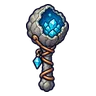
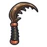
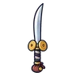
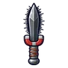

นกแร้งหิน
มอนธาตุดิน Lv 70–78
เจอที่
| แมพ | โซน | Lv | ภูมิภาค |
|---|---|---|---|
| ใจกลางหุบผา | 70–76 | แดนใต้สีแดง | |
| ใจกลางหุบผา | หลุมราชาแมงป่อง | 76–78 | แดนใต้สีแดง |
| โอเอซิสแห้งขอด | 70–76 | แดนใต้สีแดง | |
| โอเอซิสแห้งขอด | บ่อน้ำแห้ง | 76–78 | แดนใต้สีแดง |
| ทุ่งหลุมแมลงช้าง | 70–76 | แดนใต้สีแดง | |
| ทุ่งหลุมแมลงช้าง | หลุมทรายยักษ์ | 76–78 | แดนใต้สีแดง |
| ป้อมโจรทะเลทรายร้าง | 70–76 | แดนใต้สีแดง | |
| ป้อมโจรทะเลทรายร้าง | ป้อมไม้บนหิน | 76–78 | แดนใต้สีแดง |
ค่าสถานะตามเลเวล
| Lv | HP | ATK | DEF | MDEF | EXP | Job |
|---|---|---|---|---|---|---|
| 70 | 22,500 | 139–210 | 17 | 15 | 84 | 63 |
| 74 | 26,228 | 150–225 | 18 | 16 | 88 | 66 |
| 78 | 30,576 | 160–240 | 19 | 16 | 92 | 69 |
ตีด้วยธาตุไหนดี
แรงขึ้น: ไฟ ×1.5 พิษ ×1.25
เบาลง: ลม ×0.5 ดิน ×0.25
วัตถุดิบที่ดรอป
| ของ | โอกาส | |
|---|---|---|
| ขนแร้งหิน | 55% | 1 ชิ้น (15% ได้ 2) |
อุปกรณ์ที่ดรอป (5)
| ของ | โอกาส |
|---|---|
 ออร์บหินจีโอด | 0.25% |
 เคียวคู่กรามด้วงคีม | 0.25% |
 ดาบคู่พ่อค้าแรคคูน | 0.12% |
| โหลหิ่งห้อย | 0.08% |
 มีดคู่หินแม่เหล็ก | 0.06% |
สกิล
ยิงกระจาย (Lv 25+) · ยิงกระจาย (Lv 60+) · หลบ (Lv 60+)